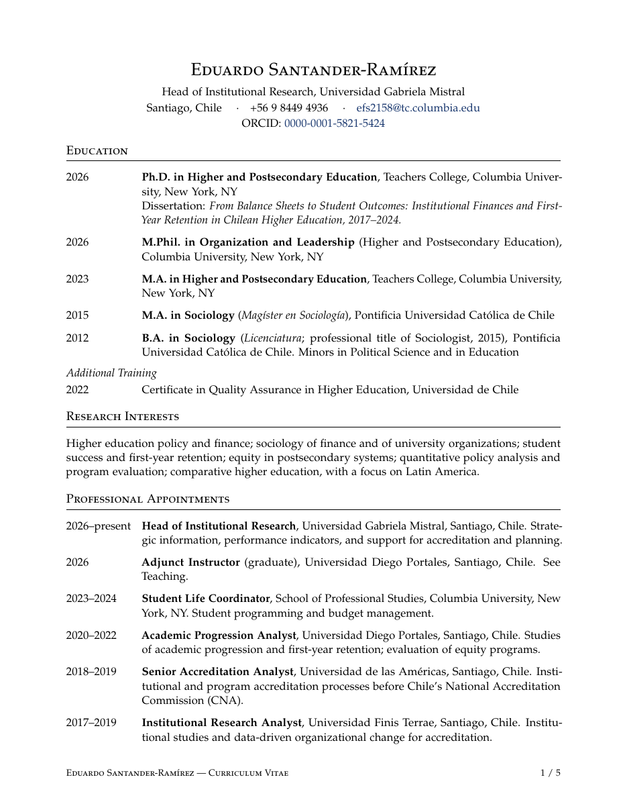
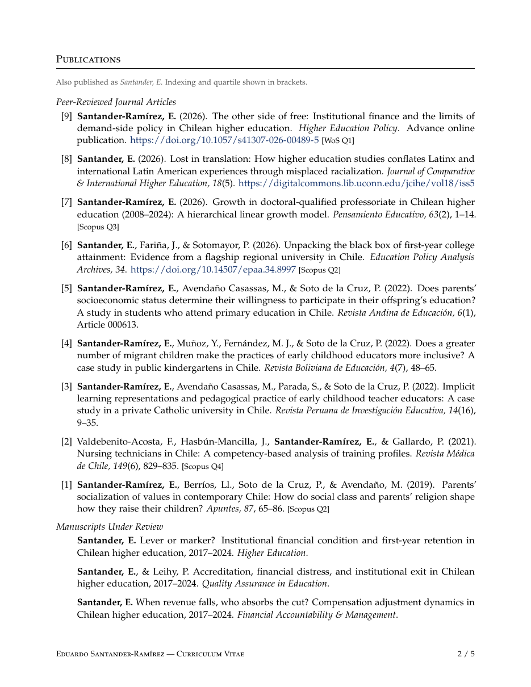
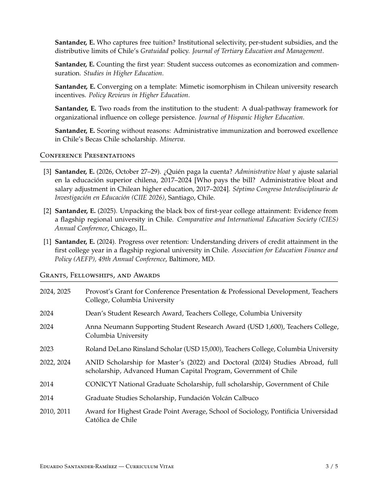
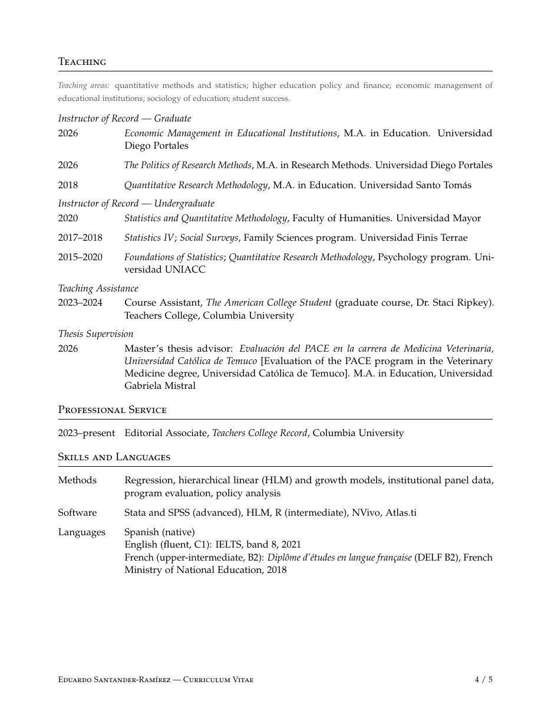
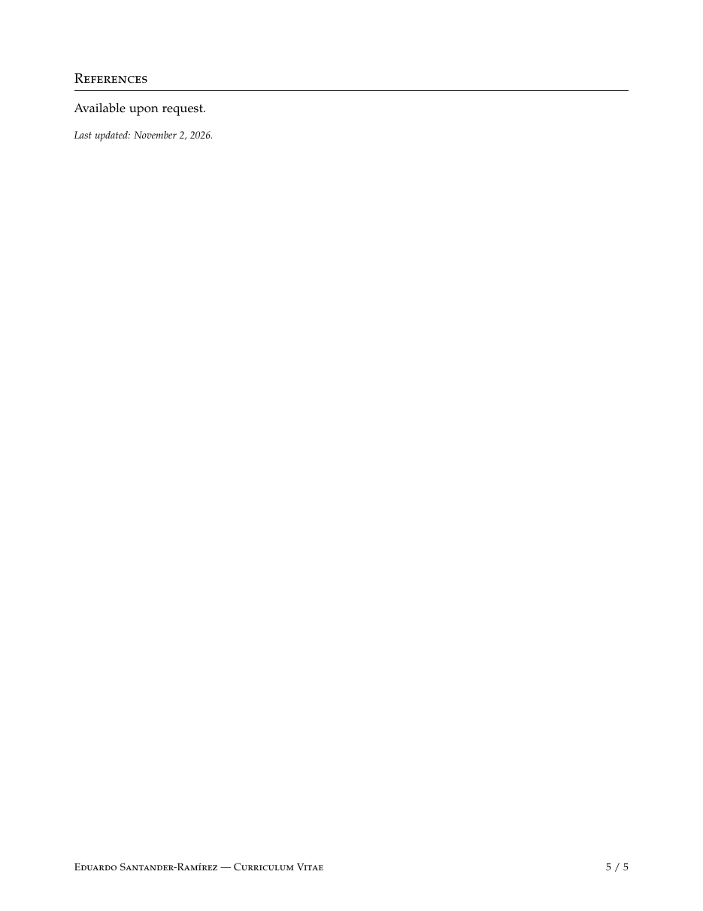

From Balance Sheets to Student Outcomes: Institutional Finances and First-Year Retention in Chilean Higher Education, 2017–2024
About
I am Head of Institutional Research at Universidad Gabriela Mistral in Santiago, Chile. I hold a Ph.D. in Higher and Postsecondary Education from Teachers College, Columbia University, and an M.A. and B.A. in Sociology from the Pontificia Universidad Católica de Chile.
I study the supply side of higher education: the institutions themselves, how they are financed, how they spend their money, and how that shapes what happens to their students. My work covers higher education policy and finance, the sociology of finance and of university organizations, first-year retention, and equity, with a focus on Chile and Latin America. My dissertation links institutional finances to first-year retention across Chilean higher education from 2017 to 2024. I work mainly with institutional panel data, hierarchical and growth models, and program evaluation.
Why the supply side? Most research on higher education policy looks at students: who enrolls, who gets aid, who drops out. Those questions matter, and Chile’s free-tuition policy has produced a lot of good work on them. But after years working inside Chilean universities, in institutional research and accreditation offices, I kept noticing that what happens to students depends a lot on the institution they end up in: how much money it has, where that money goes, and what gets cut when revenue falls. A policy can pay a student’s tuition, but someone still has to run the classes, pay the faculty and keep the lights on. That side of the story is the one I find most interesting, and it is the one we know the least about.
Before and during my doctoral studies, I worked in institutional research, accreditation and student progression at Universidad Diego Portales, Universidad de las Américas and Universidad Finis Terrae, and in student life at Columbia University. I am an Editorial Associate at Teachers College Record and teach graduate courses at Universidad Diego Portales.
You can read my latest published article here, and my latest working paper, on administrative bloat and who absorbs budget cuts, here.
You can reach me at efs2158@tc.columbia.edu.
Research
Dissertation
Working papers
Who Pays the Bill? Administrative Growth and Payroll Adjustment to Revenue Shocks in Chilean Higher Education
Peer-reviewed articles
The other side of free: Institutional finance and the limits of demand-side policy in Chilean higher education
Lost in translation: How higher education studies conflates Latinx and international Latin American experiences through misplaced racialization
Growth in doctoral-qualified professoriate in Chilean higher education (2008–2024): A hierarchical linear growth model
Unpacking the black box of first-year college attainment: Evidence from a flagship regional university in Chile
Does parents’ socioeconomic status determine their willingness to participate in their offspring’s education? A study in students who attend primary education in Chile
Does a greater number of migrant children make the practices of early childhood educators more inclusive? A case study in public kindergartens in Chile
Implicit learning representations and pedagogical practice of early childhood teacher educators: A case study in a private Catholic university in Chile
Nursing technicians in Chile: A competency-based analysis of training profiles
Parents’ socialization of values in contemporary Chile: How do social class and parents’ religion shape how they raise their children?
Under review
Lever or marker? Institutional financial condition and first-year retention in Chilean higher education, 2017–2024
Accreditation, financial distress, and institutional exit in Chilean higher education, 2017–2024
Who captures free tuition? Institutional selectivity, per-student subsidies, and the distributive limits of Chile’s Gratuidad policy
Counting the first year: Student success outcomes as economization and commensuration
Converging on a template: Mimetic isomorphism in Chilean university research incentives
Two roads from the institution to the student: A dual-pathway framework for organizational influence on college persistence
Scoring without reasons: Administrative immunization and borrowed excellence in Chile’s Becas Chile scholarship
Conference presentations
¿Quién paga la cuenta? Administrative bloat y ajuste salarial en la educación superior chilena, 2017–2024
Unpacking the black box of first-year college attainment: Evidence from a flagship regional university in Chile
Progress over retention: Understanding drivers of credit attainment in the first college year in a flagship regional university in Chile
Teaching
Teaching areas: quantitative methods and statistics, higher education policy and finance, economic management of educational institutions, sociology of education, and student success.
Graduate
2026
Economic Management in Educational Institutions · M.A. in Education, Universidad Diego Portales
2026
The Politics of Research Methods · M.A. in Research Methods, Universidad Diego Portales
2018
Quantitative Research Methodology · M.A. in Education, Universidad Santo Tomás
Undergraduate
2020
Statistics and Quantitative Methodology · Faculty of Humanities, Universidad Mayor
2017–18
Statistics IV; Social Surveys · Family Sciences, Universidad Finis Terrae
2015–20
Foundations of Statistics; Quantitative Research Methodology · Psychology, Universidad UNIACC
Teaching assistance & supervision
2026
Master’s thesis advisor, evaluation of the PACE program in Veterinary Medicine, Universidad Católica de Temuco (M.A. in Education, Universidad Gabriela Mistral)
2023–24
Course Assistant, The American College Student (Dr. Staci Ripkey), Teachers College, Columbia University
CV
View full CV





Education
2026
Ph.D., Higher and Postsecondary Education · Teachers College, Columbia University
2026
M.Phil., Organization and Leadership · Columbia University
2023
M.A., Higher and Postsecondary Education · Teachers College, Columbia University
2015
M.A., Sociology · Pontificia Universidad Católica de Chile
2012
B.A., Sociology · Pontificia Universidad Católica de Chile
Professional title of Sociologist, 2015. Minors in Political Science and Education
Professional title of Sociologist, 2015. Minors in Political Science and Education
2022
Certificate in Quality Assurance in Higher Education · Universidad de Chile
Professional appointments
2026–
Head of Institutional Research · Universidad Gabriela Mistral
2026
Adjunct Instructor (graduate) · Universidad Diego Portales
2023–24
Student Life Coordinator · School of Professional Studies, Columbia University
2020–22
Academic Progression Analyst · Universidad Diego Portales
2018–19
Senior Accreditation Analyst · Universidad de las Américas
2017–19
Institutional Research Analyst · Universidad Finis Terrae
Grants, fellowships & awards
2024, 25
Provost’s Grant for Conference Presentation & Professional Development, Teachers College
2024
Dean’s Student Research Award, Teachers College
2024
Anna Neumann Supporting Student Research Award, Teachers College
2023
Roland DeLano Rinsland Scholar, Teachers College
2022, 24
ANID Scholarship for Master’s and Doctoral Studies Abroad, Government of Chile
2014
CONICYT National Graduate Scholarship, Government of Chile
2014
Graduate Studies Scholarship, Fundación Volcán Calbuco
2010, 11
Award for Highest GPA, School of Sociology, Pontificia Universidad Católica de Chile
Service
2023–
Editorial Associate, Teachers College Record
Methods & languages
Methods
Regression, hierarchical linear and growth models, institutional panel data, program evaluation, policy analysis
Software
Stata and SPSS (advanced), HLM, R, NVivo, Atlas.ti
Languages
Spanish (native), English (C1), French (B2)